Chapter 22 · source-backed Kafka deep dive
Group and share coordinators: ownership and recovery
Follow a coordinator from deterministic routing to shard replay, then separate share-group membership from acquisition locks and durable acknowledgement state.
Before the detail
The mental model
Membership answers who may participate. Acquisition answers who temporarily holds a record. Durable share state answers which work is already completed.
Worked example: connect the system view to the code
Worker A holds record 11 while B completes record 12. Recording 12’s ACK does not require declaring 11 complete. If 11 is released, another worker may acquire it; record 12 remains completed in the group’s durable share state.
- Validate group membership
The group coordinator owns membership.
- Track record acquisition
SharePartition lives at the source-serving broker.
- Persist delivery state
The persister connects source delivery work to the share-state owner.
Illustrative reasoning example using this chapter's source scope; not a recorded deployment or executed experiment.
Is this ordinary ACK path already atomic with Kafka output?
No. The separate KIP-1289 chapter uses a different source revision and records its implementation limits.
Choose a reading path · Terms and progress boundaries · Clarity review
1. Three different questions, three different owners
| Question | Owner | Durable source |
|---|---|---|
| Who is a member and which partitions may it read? | Group coordinator, including share-group membership. | __consumer_offsets group metadata; protocol-specific member/assignment records. |
| Which share records are temporarily acquired by a consumer? | Source partition leader’s SharePartition cache and timers. | A live delivery lease is not the same thing as a durable consumer offset. |
| Which share records/ranges are acknowledged, available or terminal? | Share coordinator for the group/topic-ID/partition key. | __share_group_state records, snapshots/updates and start-offset state. |
Share groups have three owners
Membership, record delivery and durable delivery state are deliberately separate. B1, B2 and B3 can be the same process or different brokers.

The word “share coordinator” does not replace “group coordinator.” A share consumer uses membership RPCs with the group owner and record-delivery RPCs with source leaders; those leaders persist delivery state through the share coordinator. This extra separation enables concurrent record sharing without a single monotonically committed consumer offset representing every delivery.
2. FindCoordinator is discovery—not leader election
groupShard = Utils.abs(groupId.hashCode()) % offsetsTopicPartitionCount
txnShard = Utils.abs(transactionalId.hashCode()) % txnTopicPartitionCount
shareKey = canonical(groupId, topicId, sourcePartition)
shareShard = Utils.abs(shareKey.hashCode()) % shareStateTopicPartitionCount
owner = current leader of the selected internal-topic partitionThe pinned FindCoordinator schema distinguishes group, transaction and share keys. Share routing uses the canonical groupId:topicId:partition form; a topic name is not interchangeable with its UUID. A single group can have share-state keys spread across many state shards. Internal-topic partition counts are part of this mapping—not a casually adjustable load-balancing knob.
| Example operation | Where it goes | Where it does not go |
|---|---|---|
| ConsumerGroupHeartbeat or classic JoinGroup/SyncGroup | Group coordinator for group ID. | Not the leader of every source partition; not a controller voter. |
| OffsetCommit / OffsetFetch | Group coordinator. | Not necessarily the broker storing the corresponding source records. |
| ShareGroupHeartbeat | Group coordinator. | Not the share coordinator. |
| ShareFetch / ShareAcknowledge | Relevant source partition leaders, using share sessions and acquired ranges. | Not a single group coordinator acting as a records proxy. |
| ReadShareGroupState / WriteShareGroupState | Share coordinator selected by the share-partition key. | Not the KRaft metadata log. |
| EndTxn | Transaction coordinator. | Not the group coordinator, except that group offsets can later be a transaction participant. |
A stale coordinator response means refresh/retry, not “elect a coordinator yourself.” The controller elects the internal partition leader; discovery reports that owner. During transitions the new owner may still be loading, and a network timeout does not prove that a preceding write failed.
3. Classic groups, new consumer groups and share groups
| Protocol | Assignment and ownership | Failure implications |
|---|---|---|
| Classic consumer group | JoinGroup selects a consumer member as group leader; that client computes assignment and sends SyncGroup through the broker coordinator. | The consumer group leader is not the partition leader or controller. Membership loss/rebalance uses generations, member IDs and timers. |
| New consumer protocol | ConsumerGroupHeartbeat; server-side assignment and member/group epochs with reconciliation. | Coordinator restores persisted state; members reconcile assignments and may be fenced/rejoin according to epoch state. |
| Share group | ShareGroupHeartbeat for membership/assignment; multiple members can receive distinct acquired records from a shared partition. | Membership expiry and record acquisition-lock expiry are different timers and different reasons for reassignment/redelivery. |
| Standard Flink KafkaSource | Flink enumerator assigns splits; the Kafka client uses explicit assign/seek. | Kafka group rebalance is not how Flink reassigns source subtasks. Checkpoint source offsets remain Flink recovery truth. |
Do not tell the audience that every coordinator move necessarily triggers a complete stop-the-world rebalance. The source replays persisted group state and reconstructs timers. Subsequent client heartbeats, expired sessions, lost in-flight join/sync work, protocol version and membership changes determine what reconciliation is needed.
Does a committed group offset prove my sink committed?
No. An ordinary OffsetCommit stores progress; it cannot make an external database insert atomic. Kafka consume-transform-produce can enroll offsets in a producer transaction using the transaction APIs. Standard Flink KafkaSource → KafkaSink instead uses a completed Flink checkpoint and recoverable sink transaction; its optional source OffsetCommit is separate bookkeeping. See the checkpoint boundary.
8. Presentation mental model
Group coordinator = membership desk
Source leader = record delivery desk + temporary locks
Share coordinator = durable delivery ledger
Failure question:
Did we lose a member, a delivery desk, or the ledger owner?
Which log survives, which epoch fences the old owner,
and which request must be retried after the new owner loads?Continue with transaction markers and crash windows. For exact field/version gates, use FindCoordinator, ShareGroupHeartbeat and the atlas search for ShareFetch, ShareAcknowledge and WriteShareGroupState.
Source evidence, scope and validation gaps
Source baseline: Kafka d2da6a18f839ce8b2eeb4db8e7515200258b0f81. Facts below were traced from this source snapshot. Test bodies were inspected as evidence; Kafka engine tests and live fault injection were not run. The validation report concerns the generated documentation, diagrams and links. Example placements and offsets are illustrative, not an observed deployment.
This is a modern KRaft/source-snapshot guide, not a guarantee for every Kafka release or feature level. It covers ordinary producer transactions and share acknowledgements, not the separate transactional-share development branch or every distributed-transaction API extension. Apache source excerpts are under the Apache License 2.0.
broker-publisher · BrokerMetadataPublisher.scala:112
A broker updates its metadata cache, replica roles, and each internal-topic coordinator from metadata deltas.
core/src/main/scala/kafka/server/metadata/BrokerMetadataPublisher.scala
112 override def onMetadataUpdate(
113 delta: MetadataDelta,
114 newImage: MetadataImage,
115 manifest: LoaderManifest
116 ): Unit = {
117 val highestOffsetAndEpoch = newImage.highestOffsetAndEpoch()
118
119 val deltaName = if (_firstPublish) {
120 s"initial MetadataDelta up to ${highestOffsetAndEpoch.offset}"
121 } else {
122 s"MetadataDelta up to ${highestOffsetAndEpoch.offset}"
123 }
124 try {
125 if (isTraceEnabled) {
126 trace(s"Publishing delta $delta with highest offset $highestOffsetAndEpoch")
127 }
128
129 // Publish the new metadata image to the metadata cache.
130 metadataCache.setImage(newImage)
131
132 def metadataVersionLogMsg = s"metadata.version ${newImage.features().metadataVersion()}"
133
134 if (_firstPublish) {
135 info(s"Publishing initial metadata at offset $highestOffsetAndEpoch with $metadataVersionLogMsg.")
136
137 // If this is the first metadata update we are applying, initialize the managers
138 // first (but after setting up the metadata cache).
139 initializeManagers(newImage)group-route · GroupCoordinatorService.java:459
Group ID hashes to __consumer_offsets; its leader owns the group shard.
group-coordinator/src/main/java/org/apache/kafka/coordinator/group/GroupCoordinatorService.java
459 public int partitionFor(
460 String groupId
461 ) {
462 throwIfNotActive();
463 return Utils.abs(groupId.hashCode()) % numPartitions;
464 }
465
466 /**
467 * Validates the request.
468 *
469 * @param request The request to validate.
470 * @param apiVersion The version of ConsumerGroupHeartbeat RPC
471 * @throws InvalidRequestException if the request is not valid.
472 * @throws UnsupportedAssignorException if the assignor is not supported.
473 */
474 private void throwIfConsumerGroupHeartbeatRequestIsInvalid(
475 ConsumerGroupHeartbeatRequestData request,
476 int apiVersion
477 ) throws InvalidRequestException, UnsupportedAssignorException {
478 if (apiVersion >= CONSUMER_GENERATED_MEMBER_ID_REQUIRED_VERSION ||
479 request.memberEpoch() > 0 ||
480 request.memberEpoch() == LEAVE_GROUP_MEMBER_EPOCH
481 ) {
482 throwIfEmptyString(request.memberId(), "MemberId can't be empty.");
483 }
484
485 throwIfEmptyString(request.groupId(), "GroupId can't be empty.");
486 throwIfEmptyString(request.instanceId(), "InstanceId can't be empty.");group-load · GroupCoordinatorService.java:2847
Internal-topic election schedules coordinator shard loading with the partition leader epoch.
group-coordinator/src/main/java/org/apache/kafka/coordinator/group/GroupCoordinatorService.java
2847 public void onElection(
2848 int groupMetadataPartitionIndex,
2849 int groupMetadataPartitionLeaderEpoch
2850 ) {
2851 throwIfNotActive();
2852 runtime.scheduleLoadOperation(
2853 new TopicPartition(Topic.GROUP_METADATA_TOPIC_NAME, groupMetadataPartitionIndex),
2854 groupMetadataPartitionLeaderEpoch
2855 );
2856 }
2857
2858 /**
2859 * See {@link GroupCoordinator#onResignation(int, OptionalInt)}.
2860 */
2861 @Override
2862 public void onResignation(
2863 int groupMetadataPartitionIndex,
2864 OptionalInt groupMetadataPartitionLeaderEpoch
2865 ) {
2866 throwIfNotActive();
2867 runtime.scheduleUnloadOperation(
2868 new TopicPartition(Topic.GROUP_METADATA_TOPIC_NAME, groupMetadataPartitionIndex),
2869 groupMetadataPartitionLeaderEpoch
2870 );
2871 }
2872
2873 /**
2874 * See {@link GroupCoordinator#onMetadataUpdate(MetadataDelta, MetadataImage)}.group-members · GroupMetadataManager.java:6631
Loaded classic, consumer, share and Streams groups reconstruct timers according to their protocol.
group-coordinator/src/main/java/org/apache/kafka/coordinator/group/GroupMetadataManager.java
6631 public void onLoaded() {
6632 Map<ClassicGroupState, Long> classicGroupSizeCounter = new HashMap<>();
6633 groups.forEach((groupId, group) -> {
6634 switch (group.type()) {
6635 case STREAMS:
6636 StreamsGroup streamsGroup = (StreamsGroup) group;
6637 log.info("Loaded streams group {} with {} members.", groupId, streamsGroup.members().size());
6638 streamsGroup.members().forEach((memberId, member) -> {
6639 log.debug("Loaded member {} in streams group {}.", memberId, groupId);
6640 scheduleStreamsGroupSessionTimeout(groupId, memberId);
6641 if (member.state() == org.apache.kafka.coordinator.group.streams.MemberState.UNREVOKED_TASKS) {
6642 scheduleStreamsGroupRebalanceTimeout(
6643 groupId,
6644 member.memberId(),
6645 member.memberEpoch(),
6646 member.rebalanceTimeoutMs()
6647 );
6648 }
6649 });
6650 break;
6651
6652 case CONSUMER:
6653 ConsumerGroup consumerGroup = (ConsumerGroup) group;
6654 log.info("Loaded consumer group {} with {} members.", groupId, consumerGroup.members().size());
6655 consumerGroup.members().forEach((memberId, member) -> {
6656 log.debug("Loaded member {} in consumer group {}.", memberId, groupId);
6657 scheduleConsumerGroupSessionTimeout(groupId, memberId);
6658 if (member.state() == MemberState.UNREVOKED_PARTITIONS) {runtime-load · CoordinatorRuntime.java:578
Shard replay is asynchronous; active state follows successful load.
coordinator-common/src/main/java/org/apache/kafka/coordinator/common/runtime/CoordinatorRuntime.java
578 private void load() {
579 if (state != CoordinatorState.LOADING) {
580 throw new IllegalStateException("Coordinator must be in loading state");
581 }
582
583 loader.load(tp, coordinator).whenComplete((summary, exception) -> {
584 scheduleInternalOperation("CompleteLoad(tp=" + tp + ", epoch=" + epoch + ")", tp, () -> {
585 CoordinatorContext context = coordinators.get(tp);
586 if (context != null) {
587 if (context.state != CoordinatorState.LOADING) {
588 log.info("Ignored load completion from {} because context is in {} state.",
589 context.tp, context.state);
590 return;
591 }
592 try {
593 if (exception != null) throw exception;
594 context.transitionTo(CoordinatorState.ACTIVE);
595 if (summary != null) {
596 runtimeMetrics.recordPartitionLoadSensor(summary.startTimeMs(), summary.endTimeMs());
597 log.info("Finished loading of metadata from {} with epoch {} in {}ms where {}ms " +
598 "was spent in the scheduler. Loaded {} records which total to {} bytes.",
599 tp, epoch, summary.endTimeMs() - summary.startTimeMs(),
600 summary.schedulerQueueTimeMs(), summary.numRecords(), summary.numBytes());
601 }
602 } catch (Throwable ex) {
603 log.error("Failed to load metadata from {} with epoch {} due to {}.",
604 tp, epoch, ex.getMessage(), ex);
605 context.transitionTo(CoordinatorState.FAILED);runtime-hw · CoordinatorRuntime.java:1784
Replication high-watermark callbacks advance committed views and release deferred responses.
coordinator-common/src/main/java/org/apache/kafka/coordinator/common/runtime/CoordinatorRuntime.java
1784 class HighWatermarkListener implements PartitionWriter.Listener {
1785
1786 static final long NO_OFFSET = -1L;
1787
1788 /**
1789 * The atomic long is used to store the last and unprocessed high watermark
1790 * received from the partition. The atomic value is replaced by -1L when
1791 * the high watermark is taken to update the context.
1792 */
1793 private final AtomicLong lastHighWatermark = new AtomicLong(NO_OFFSET);
1794
1795 /**
1796 * @return The last high watermark received or NO_OFFSET if none is pending.
1797 */
1798 public long lastHighWatermark() {
1799 return lastHighWatermark.get();
1800 }
1801
1802 /**
1803 * Updates the high watermark of the corresponding coordinator.
1804 *
1805 * @param tp The topic partition.
1806 * @param offset The new high watermark.
1807 */
1808 @Override
1809 public void onHighWatermarkUpdated(
1810 TopicPartition tp,
1811 long offsetruntime-threads · MultiThreadedEventProcessor.java:36
A keyed event processor supports many shards; not one dedicated thread/pod per group.
36 public final class MultiThreadedEventProcessor implements CoordinatorEventProcessor {
37
38 /**
39 * The poll timeout to wait for an event by the EventProcessorThread.
40 */
41 private static final long POLL_TIMEOUT_MS = 300L;
42
43 /**
44 * The logger.
45 */
46 private final Logger log;
47
48 /**
49 * The accumulator.
50 */
51 private final EventAccumulator<TopicPartition, CoordinatorEvent> accumulator;
52
53 /**
54 * The processing threads.
55 */
56 private final List<EventProcessorThread> threads;
57
58 /**
59 * A boolean indicated whether the event processor is shutting down.
60 */
61 private volatile boolean shuttingDown;
62
63 /**offset-marker · OffsetMetadataManager.java:1251
Commit materializes pending transactional offsets; abort discards them; no pending offsets makes replay a no-op.
group-coordinator/src/main/java/org/apache/kafka/coordinator/group/OffsetMetadataManager.java
1251 public void replayEndTransactionMarker(
1252 long producerId,
1253 TransactionResult result
1254 ) throws RuntimeException {
1255 Offsets pendingOffsets = pendingTransactionalOffsets.remove(producerId);
1256
1257 if (pendingOffsets == null) {
1258 log.debug("Replayed end transaction marker with result {} for producer id {} but " +
1259 "no pending offsets are present. Ignoring it.", result, producerId);
1260 return;
1261 }
1262
1263 pendingOffsets.offsetsByGroup.forEach((groupId, topicOffsets) -> {
1264 topicOffsets.forEach((topic, partitionOffsets) -> {
1265 partitionOffsets.keySet().forEach(partitionId -> {
1266 openTransactions.remove(groupId, topic, partitionId, producerId);
1267 });
1268 });
1269 });
1270
1271 if (result == TransactionResult.COMMIT) {
1272 log.debug("Committed transactional offset commits for producer id {}.", producerId);
1273
1274 pendingOffsets.offsetsByGroup.forEach((groupId, topicOffsets) -> {
1275 topicOffsets.forEach((topicName, partitionOffsets) -> {
1276 partitionOffsets.forEach((partitionId, offsetAndMetadata) -> {
1277 OffsetAndMetadata existingOffsetAndMetadata = offsets.get(
1278 groupId,txn-route · TransactionStateManager.scala:439
Transactional ID hashes to a __transaction_state partition.
core/src/main/scala/kafka/coordinator/transaction/TransactionStateManager.scala
439 def partitionFor(transactionalId: String): Int = Utils.abs(transactionalId.hashCode) % transactionTopicPartitionCount
440
441 private def loadTransactionMetadata(topicPartition: TopicPartition, coordinatorEpoch: Int): ConcurrentMap[String, TransactionMetadata] = {
442 def logEndOffset = replicaManager.getLogEndOffset(topicPartition).getOrElse(-1L)
443
444 val loadedTransactions = new ConcurrentHashMap[String, TransactionMetadata]
445
446 replicaManager.getLog(topicPartition) match {
447 case None =>
448 warn(s"Attempted to load transaction metadata from $topicPartition, but found no log")
449
450 case Some(log) =>
451 // buffer may not be needed if records are read from memory
452 var buffer = ByteBuffer.allocate(0)
453
454 // loop breaks if leader changes at any time during the load, since logEndOffset is -1
455 var currOffset = log.logStartOffset
456
457 // loop breaks if no records have been read, since the end of the log has been reached
458 var readAtLeastOneRecord = true
459
460 try {
461 while (currOffset < logEndOffset && readAtLeastOneRecord && !shuttingDown.get() && inReadLock(stateLock, () => {
462 loadingPartitions.exists { idAndEpoch: TransactionPartitionAndLeaderEpoch =>
463 idAndEpoch.txnPartitionId == topicPartition.partition && idAndEpoch.coordinatorEpoch == coordinatorEpoch}})) {
464 val fetchDataInfo = log.read(currOffset, config.transactionLogLoadBufferSize, FetchIsolation.LOG_END, true)
465
466 readAtLeastOneRecord = fetchDataInfo.records.sizeInBytes > 0find-schema · FindCoordinatorRequest.json:17
Coordinator key types and canonical share-key format are versioned wire contract.
clients/src/main/resources/common/message/FindCoordinatorRequest.json
17 "apiKey": 10,
18 "type": "request",
19 "listeners": ["broker"],
20 "name": "FindCoordinatorRequest",
21 // Version 1 adds KeyType.
22 //
23 // Version 2 is the same as version 1.
24 //
25 // Version 3 is the first flexible version.
26 //
27 // Version 4 adds support for batching via CoordinatorKeys (KIP-699)
28 //
29 // Version 5 adds support for new error code TRANSACTION_ABORTABLE (KIP-890).
30 //
31 // Version 6 adds support for share groups (KIP-932).
32 // For key type SHARE (2), the coordinator key format is "groupId:topicId:partition".
33 "validVersions": "0-6",
34 "flexibleVersions": "3+",
35 "fields": [
36 { "name": "Key", "type": "string", "versions": "0-3",
37 "about": "The coordinator key." },
38 { "name": "KeyType", "type": "int8", "versions": "1+", "default": "0", "ignorable": false,
39 "about": "The coordinator key type. (group, transaction, share)." },
40 { "name": "CoordinatorKeys", "type": "[]string", "versions": "4+",
41 "about": "The coordinator keys." }
42 ]
43 }
44marker-handler · KafkaApis.scala:1748
Participant brokers append control batches; __consumer_offsets markers use the group coordinator completion path.
core/src/main/scala/kafka/server/KafkaApis.scala
1748 def handleWriteTxnMarkersRequest(request: Request, requestLocal: RequestLocal): Unit = {
1749 // We are checking for AlterCluster permissions first. If it is not present, we are authorizing cluster operation
1750 // The latter will throw an exception if it is denied.
1751 if (!authHelper.authorize(request.context, ALTER, CLUSTER, CLUSTER_NAME, true, false, 1)) {
1752 authHelper.authorizeClusterOperation(request, CLUSTER_ACTION)
1753 }
1754 val writeTxnMarkersRequest = request.body(classOf[WriteTxnMarkersRequest])
1755 val errors = new ConcurrentHashMap[java.lang.Long, util.Map[TopicPartition, Errors]]()
1756 // List of transaction marker entries, each containing producer metadata, transaction result (commit/abort),
1757 // target partitions, and transaction version.
1758 val markers = writeTxnMarkersRequest.markers
1759 val numAppends = new AtomicInteger(markers.size)
1760
1761 if (numAppends.get == 0) {
1762 requestHelper.sendResponseExemptThrottle(request, new WriteTxnMarkersResponse(errors))
1763 return
1764 }
1765
1766 def updateErrors(producerId: Long, currentErrors: ConcurrentHashMap[TopicPartition, Errors]): Unit = {
1767 val previousErrors = errors.putIfAbsent(producerId, currentErrors)
1768 if (previousErrors != null)
1769 previousErrors.putAll(currentErrors)
1770 }
1771
1772 /**
1773 * This is the call back invoked when a log append of transaction markers succeeds. This can be called multiple
1774 * times when handling a single WriteTxnMarkersRequest because there is one append per TransactionMarker in the
1775 * request, so there could be multiple appends of markers to the log. The final response will be sent onlytest-runtime · CoordinatorRuntimeTest.java:182
Test covers failed shard loading, rather than treating elected ownership as immediately ready.
182 public void testScheduleLoadingWithFailure() {
183 MockTimer timer = new MockTimer();
184 MockPartitionWriter writer = mock(MockPartitionWriter.class);
185 MockCoordinatorLoader loader = mock(MockCoordinatorLoader.class);
186 MockCoordinatorShardBuilderSupplier supplier = mock(MockCoordinatorShardBuilderSupplier.class);
187 MockCoordinatorShardBuilder builder = mock(MockCoordinatorShardBuilder.class);
188 MockCoordinatorShard coordinator = mock(MockCoordinatorShard.class);
189
190 CoordinatorRuntime<MockCoordinatorShard, String> runtime =
191 new CoordinatorRuntime.Builder<MockCoordinatorShard, String>()
192 .withTime(timer.time())
193 .withTimer(timer)
194 .withLoader(loader)
195 .withWriteTimeout(DEFAULT_WRITE_TIMEOUT)
196 .withEventProcessor(new DirectEventProcessor())
197 .withPartitionWriter(writer)
198 .withCoordinatorShardBuilderSupplier(supplier)
199 .withCoordinatorRuntimeMetrics(mock(CoordinatorRuntimeMetrics.class))
200 .withCoordinatorMetrics(mock(CoordinatorMetrics.class))
201 .withSerializer(new StringSerializer())
202 .withExecutorService(mock(ExecutorService.class))
203 .withCachedBufferMaxBytesSupplier(() -> CACHED_BUFFER_MAX_BYTES)
204 .build();
205
206 when(builder.withSnapshotRegistry(any())).thenReturn(builder);
207 when(builder.withLogContext(any())).thenReturn(builder);
208 when(builder.withTime(any())).thenReturn(builder);
209 when(builder.withTimer(any())).thenReturn(builder);Supporting versioned references: Kafka 4.1 protocol reference (older than this source snapshot), and KIP-932 share-group design. Source wins where versioned documentation or proposals differ.